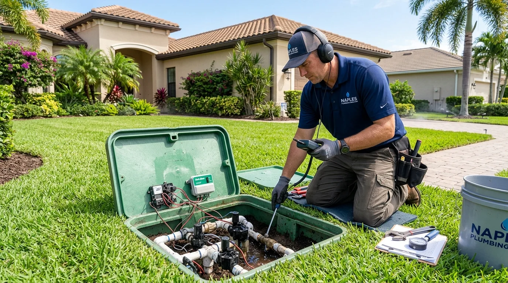
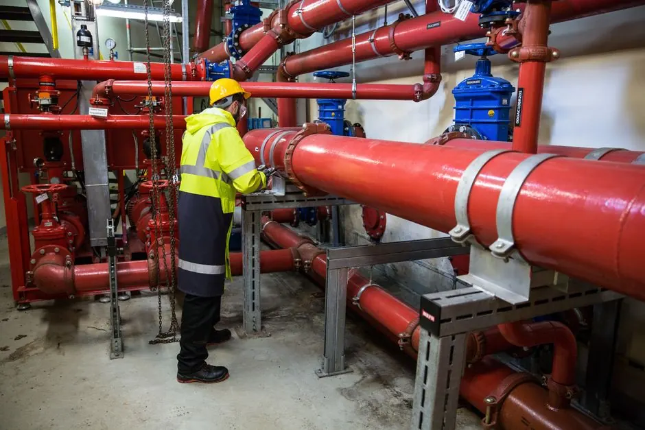
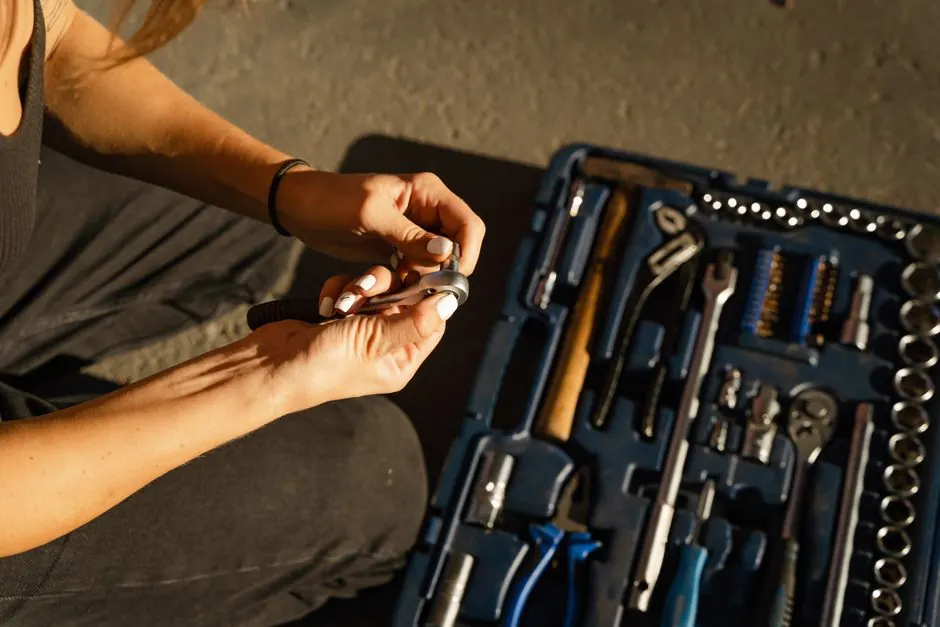
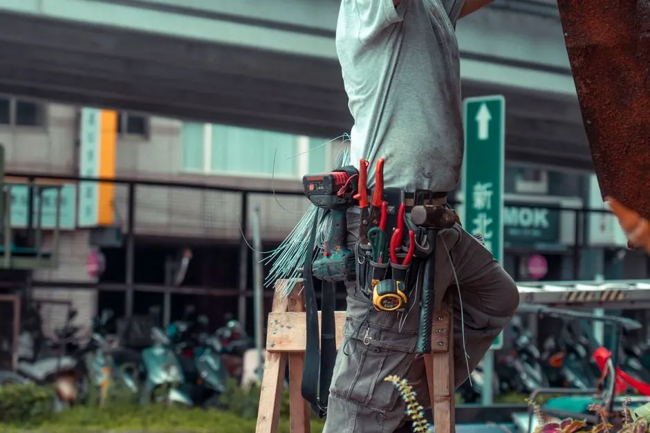

Mainline & Lateral Line Testing
Independent pressure checks isolating main pressurized supply runs from downstream lateral sprinkler pipes.
Subterranean sprinkler fractures and leaking irrigation valves waste thousands of gallons of water, wash away topsoil, and create sinkholes under Naples lawns. Our licensed technicians provide non-invasive acoustic detection and lasting repairs to protect your landscape.

Irrigation and sprinkler leak detection locates pressurized leaks hidden underground within main supply pipes, lateral distribution lines, solenoid zone valves, and backflow assemblies. Undetected leaks soak root systems, damage driveways, and send water bills soaring.
In Naples, Florida, the combination of loose sandy soil, tropical palm root intrusion, and corrosive reclaimed irrigation water puts extreme stress on underground PVC pipes. Our team uses precision acoustic ground sensors and digital pressure diagnostics to isolate the exact point of failure without unnecessarily trenching your grass or flowerbeds.
Our comprehensive irrigation leak detection service covers all aspects of your subterranean sprinkler and manifold infrastructure to ensure lasting efficiency.
Independent pressure checks isolating main pressurized supply runs from downstream lateral sprinkler pipes.
Testing in-ground valve boxes for weeping diaphragms, cracked manifold housings, and stuck electric solenoids.
Diagnosing continuous movement at the irrigation meter and checking backflow prevention assemblies for seal failure.
Pinpoint acoustic mapping that restricts excavation to a small, neat area, preserving your pristine turf and landscaping.
We check your irrigation meter and run pressure decay tests across each individual zone to verify whether the leak is on the constant-pressure mainline or a lateral line.
Our technicians sweep the zone with sensitive electro-acoustic ground sensors that detect the high-frequency vibration of water escaping pressurized subterranean pipes.
We excavate overgrown valve boxes, inspect solenoids and internal seals, and test for continuous subterranean seepage into surrounding mulch and soil.
Once the exact fault is marked, we perform a clean, surgical excavation, replace damaged PVC pipes or fittings with commercial-grade components, and re-seal the line.
We re-pressurize the irrigation system, verify zero pressure drop, replace the sod neatly, and ensure every sprinkler head delivers optimal spray coverage.

We check your irrigation meter and run pressure decay tests across each individual zone to verify whether the leak is on the constant-pressure mainline or a lateral line.
Ground-contact microphones tuned to filter out ambient wind and isolate pressurized underground PVC pipe hiss.
Calibrated diagnostic gauges that pinpoint minute pressure drops when zones are pressurized and isolated.
Wire and valve tracing equipment designed to track deeply buried irrigation solenoid boxes beneath turf.
Soil conductivity meters mapping subsurface water dispersion boundaries beneath lawns, pavers, and walkways.

A homeowner in Naples observed spongy, waterlogged patches in the front lawn and sinking pavers alongside the driveway.
After: We traced a severed 1-inch lateral irrigation line damaged by tree roots, spliced in heavy-duty PVC, and saved the driveway base.
Book this service →
The municipal irrigation meter continued spinning around the clock even when the automated controller schedule was turned off.
After: Our acoustic detection isolated a leaking main manifold valve seal, stopping over 1,500 gallons of daily waste immediately.
Book this service →Sprinkler heads in the backyard barely sputtered water, leaving large brown patches in premium St. Augustine turf.
After: We repaired a cracked elbow fitting buried 18 inches deep, restoring full system pressure and lush green turf coverage.
Book this service →Timely diagnostic repair stops massive water waste, protects root systems, and preserves outdoor hardscaping.
Ask a pro →Persistent underground water leaks erode subsurface soil, destabilizing surrounding pavers and walkways.
Pressurized mainline leaks bleed hundreds of gallons per hour, triggering tiered utility rates and water restrictions.
Pressure loss prevents rotor and pop-up heads from rising, leaving costly tropical turf and plants to wither.
$175 - $450 depending on scope
In 2026, irrigation and sprinkler leak detection in Naples typically ranges from $175 to $450, depending on the property size, the number of zones, and whether the leak is on the mainline or lateral lines. We give clear upfront pricing before any work begins.
Addressing an irrigation leak immediately pays for itself in reduced water bills and avoided landscape restoration costs.
Properties with multi-zone automated manifolds require more systematic zone-by-zone isolation testing.
Get a quote ↗Constant-pressure mainlines are tested differently than secondary lines pressurized only during active cycles.
Get a quote ↗Pipes buried beneath roots, decorative rocks, or concrete curbing require specialized non-destructive methods.
Get a quote ↗“We had soggy patches across our lawn and a sharp increase in our monthly water bill. Naples Leak Detection pinpointed a cracked lateral sprinkler line under our paver pathway without tearing up the landscaping. Truly top-tier service!”
Brandon M.Homeowner, Bayshore Arts District
✓ Verified“One of our irrigation zones lost pressure entirely. Their technician tested the manifold valve box and found an underground solenoid failure in 30 minutes. Fixed it the same day with upfront pricing.”
Patricia S.Homeowner, Royal Harbor
✓ Verified“Excellent commercial irrigation leak detection on our multi-zone Port Royal estate. They saved our turf and prevented further erosion around the retention wall.”
Gregory T.Estate Manager, Port Royal
✓ VerifiedNoticeable indicators include squishy or waterlogged turf spots when the system is off, sunken lawn depressions, dry patches caused by low sprinkler head pressure, continuous hissing in valve boxes, and unexpected surges on your utility bill.
Because irrigation systems operate under high pressure, a single cracked underground PVC pipe or stuck solenoid valve can waste 1,000 to over 5,000 gallons per day, quickly multiplying your municipal water charges into the hundreds of dollars.
We utilize non-invasive diagnostic tools including acoustic listening probes, pressure decay isolation testing, digital tracer gas, and thermal sensors. This allows us to locate subterranean pipe fractures with surgical precision, requiring minimal localized digging.
In 2026, professional irrigation and sprinkler leak detection in Naples FL generally ranges between $175 and $450, depending on the acreage, number of active zones, and accessibility of buried valve boxes. We provide clear, written estimates before beginning any work.
Don't let a hidden sprinkler pipe leak damage your lawn and drive up water charges. Contact our Naples team for fast, non-invasive detection. Call now for a free estimate!
Request a Quote (239)1234567 →We invite you to reach out for any plumbing needs. Our team is available to answer your questions and provide quick service.